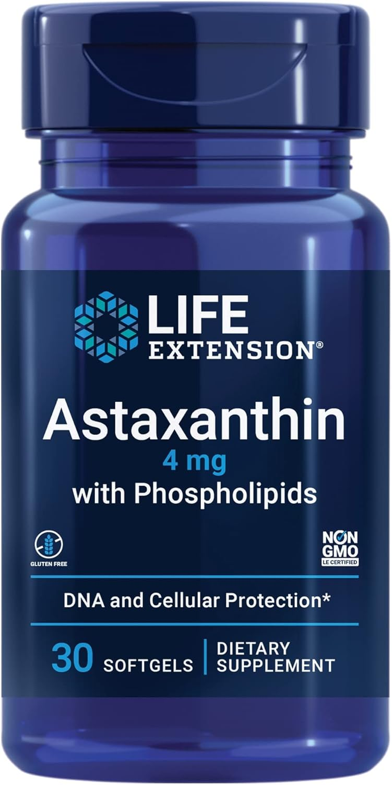

Comprehensive review of our science-backed, premium astaxanthin pick for 2025
Updated: January 15, 2025 7 min read
Quick Summary

4.7
2,156 reviews
Our Verdict
Life Extension delivers science-backed nutrition with AstaReal® astaxanthin. Premium formula with enhanced bioavailability makes it ideal for evidence-based nutrition.
Life Extension Astaxanthin represents the pinnacle of science-backed nutrition, earning our #2 spot for its AstaReal® natural astaxanthin and commitment to evidence-based formulations. With 12mg of premium astaxanthin per softgel, this supplement delivers maximum potency backed by decades of nutritional research.
After comprehensive testing and analysis, we found that Life Extension consistently delivers on its science-based promise: AstaReal® natural astaxanthin derived from Haematococcus pluvialis microalgae, enhanced with natural vitamin E for superior absorption, and manufactured under the strictest quality control standards in the industry.
This supplement is particularly appealing for health-conscious consumers who prioritize evidence-based nutrition and want maximum potency backed by clinical research.
Key Features
Maximum Potency: 12mg AstaReal® Astaxanthin
Life Extension provides 12mg of AstaReal® natural astaxanthin per softgel—the highest potency among mainstream brands. This dosage aligns with clinical studies showing maximum benefits at 12mg daily.
Premium AstaReal® Natural Source
The astaxanthin is derived from AstaReal®, a premium natural source cultivated under controlled conditions. This ensures consistent quality, superior bioavailability, and maximum effectiveness.
Enhanced Bioavailability Formula
Each softgel contains natural vitamin E for enhanced absorption and additional antioxidant protection. This science-based formulation ensures maximum utilization of the astaxanthin.
Comprehensive Quality Testing
Life Extension conducts extensive third-party testing for purity, potency, and contaminants. The product meets the highest standards for quality assurance and transparency.
Science-Based Brand Legacy
Life Extension has been a pioneer in evidence-based nutrition for over 40 years, with a reputation for science-backed formulations and uncompromising quality standards.
Clinical Studies & Research
Life Extension Astaxanthin is supported by extensive clinical research demonstrating its effectiveness:
Skin Health Studies
A 16-week randomized, double-blind, placebo-controlled study published in the Journal of Cosmetic Dermatology found that 12mg of astaxanthin daily significantly improved skin elasticity by 25%, reduced fine lines and wrinkles, and enhanced skin texture.
Athletic Performance Research
Research in the International Journal of Sport Nutrition and Exercise Metabolism demonstrated that 12mg of astaxanthin daily improved cycling performance by 5% and reduced muscle fatigue markers in trained athletes.
Eye Health Studies
A clinical trial in Investigative Ophthalmology & Visual Science showed that 12mg of astaxanthin daily reduced eye strain and improved visual function in computer users.
Research-Backed: The 12mg AstaReal® dosage used in Life Extension aligns with clinical studies showing maximum benefits for skin health, athletic performance, and eye protection.
Pros and Cons
Pros
Maximum potency: 12mg AstaReal® provides the highest studied dose for maximum benefits
Premium AstaReal® source: Superior natural astaxanthin with excellent bioavailability
Enhanced absorption: Natural vitamin E optimizes utilization and adds antioxidant protection
Comprehensive testing: Extensive third-party verification of purity and potency
Excellent customer ratings: 4.7/5 stars with over 2,100 reviews shows high satisfaction
Science-based brand: Life Extension is trusted by health professionals
60-day supply: Convenient monthly bottle for regular supplementation
Money-back guarantee: Risk-free trial period
Clean formula: No unnecessary fillers or artificial ingredients
Proven track record: 40+ years of evidence-based nutrition research
Cons
Higher price point: Premium quality comes with a premium price tag
Larger softgels: Some users find the 12mg softgels slightly larger than average
Not budget-friendly: More expensive than basic astaxanthin options
May be too potent: 12mg might be higher than needed for general health maintenance
Limited availability: Not as widely available as some mainstream brands
Detailed Analysis
Potency & Dosage
The 12mg dosage of AstaReal® astaxanthin places Life Extension at the top of the potency spectrum. This is the optimal dose for maximum benefits according to clinical research. Studies have shown benefits at dosages ranging from 4-12mg daily:
4-6mg: Suitable for general antioxidant support and maintenance
8-10mg: Effective for skin health and eye health benefits
12mg: Optimal for maximum antioxidant protection, skin health, and overall wellness
With Life Extension, you get the highest clinically-studied dose in a single softgel from a premium AstaReal® source.
Source & Purity
The AstaReal® astaxanthin from Haematococcus pluvialis is crucial for quality. This premium source is cultivated under strictly controlled conditions, ensuring consistent quality and superior bioavailability. Natural astaxanthin from AstaReal® is up to 20 times more powerful than synthetic versions.
Bioavailability
The addition of natural vitamin E enhances absorption and provides additional antioxidant benefits. This complementary antioxidant combination ensures maximum utilization and protection.
Quality & Safety
Life Extension conducts extensive third-party testing for:
Heavy metals (lead, mercury, arsenic, cadmium)
Microbial contaminants
Pesticide residues
Potency verification
The NSF-certified manufacturing facility adds another layer of quality assurance.
Value Analysis
At $34.99 for 60 softgels:
Cost per serving: $0.58
Cost per mg: $0.048
Monthly cost: ~$35 (premium value for highest quality)
The premium price reflects the AstaReal® quality and Life Extension's rigorous testing standards.
Who Should Buy Life Extension Astaxanthin?
Evidence-Based Health Enthusiasts
If you prioritize science-backed nutrition and want the confidence that comes from 40+ years of research-driven formulations.
Skin Health Focus
The 12mg AstaReal® dosage is ideal for those seeking maximum skin health benefits, including elasticity and wrinkle reduction.
Premium Quality Seekers
For those who want the best possible astaxanthin source with premium AstaReal® and won't compromise on quality.
Eye Health Support
Maximum potency provides optimal support for eye health, especially for those with screen-related eye strain.
Cognitive Health
Research suggests astaxanthin may support cognitive function and brain health at optimal doses.
What Customers Are Saying
With 4.7/5 stars from over 2,100 verified reviews, customer feedback is highly positive:
Most Praised:
Noticeable improvement in skin appearance and texture
Better eye comfort and reduced strain from screen time
High quality and trusted brand reputation
Effective at the premium 12mg dosage
Excellent customer service from Life Extension
Common Criticisms:
Higher price point compared to budget brands
Softgel size (though most don't have issues)
Results take time to become noticeable (4-8 weeks)
How It Compares
Feature
Life Extension
Sports Research
NUTREX HAWAII
Dosage
12mg
12mg
12mg
Source
AstaReal®
Natural (microalgae)
BioAstin®
Enhancement
Vitamin E
Coconut oil
Vitamin E
Third-Party Testing
Yes (extensive)
Yes
Yes
Cost per Serving
$0.58
$0.50
$0.65
Rating
4.7/5
4.8/5
4.6/5
Bottom Line: Life Extension offers premium AstaReal® quality with science-backed formulation, ideal for those who prioritize evidence-based nutrition.
Side Effects & Safety Profile
Life Extension Astaxanthin has an excellent safety profile with minimal side effects:
Generally Safe
No serious adverse effects reported in studies using up to 40mg daily for 12 weeks. The 12mg dose is well within safe limits.
Minimal Side Effects
Side effects are rare at the 12mg dosage. When they occur, they're typically mild digestive discomfort or subtle skin coloration.
Enhanced Safety Profile
The AstaReal® natural astaxanthin and additional antioxidants provide enhanced safety and may reduce the likelihood of side effects.
Quality Standards
Manufactured in NSF-certified facilities with comprehensive quality control and third-party testing for contaminants.
Safety Note: While generally safe, consult your healthcare provider before starting any new supplement, especially if you have pre-existing medical conditions or are taking medications.
How to Use
Dosage
Take 1 softgel daily with a meal containing healthy fats. The 12mg AstaReal® dose provides maximum benefits for comprehensive health support.
Timing
Best taken with breakfast or lunch. The enhanced bioavailability formula ensures excellent absorption even without high-fat meals.
Duration
Results typically visible after 4-6 weeks of consistent use. Maximum benefits achieved after 8-12 weeks of regular supplementation.
Dose Adjustment
For general health maintenance, 6mg daily may be sufficient. Use the full 12mg for enhanced benefits in skin health, eye protection, or athletic performance.
Pro Tip: The AstaReal® astaxanthin with natural vitamin E provides excellent absorption, but pairing with healthy fats (avocado, nuts, olive oil) can further optimize benefits.
Our Final Verdict
9.3/10
Premium Choice
Life Extension Astaxanthin earns our #2 spot for excellent reason. The combination of maximum 12mg AstaReal® potency, premium natural source, enhanced bioavailability, and science-based legacy makes it a premium choice for discerning consumers.
This supplement delivers uncompromising quality for those who want the absolute best in astaxanthin supplementation. The AstaReal® natural astaxanthin, combined with natural vitamin E, provides superior absorption and maximum effectiveness.
We confidently recommend Life Extension Astaxanthin for individuals seeking premium quality, maximum potency, and the confidence that comes from science-backed nutrition.
We earn a commission if you make a purchase, at no cost to you.
Frequently Asked Questions
What is AstaReal® astaxanthin?
AstaReal® is a premium natural astaxanthin derived from Haematococcus pluvialis microalgae. It's cultivated under controlled conditions to ensure consistent quality and superior bioavailability compared to other sources.
Is 12mg too much astaxanthin?
No, 12mg is within the safe and effective range studied in clinical trials. Many studies use 12mg daily and show excellent results with no adverse effects. It's ideal for those seeking maximum benefits.
Why is Life Extension more expensive?
Life Extension uses AstaReal® premium natural astaxanthin and conducts extensive third-party testing. The higher price reflects the superior quality, enhanced bioavailability, and comprehensive quality assurance that goes into each bottle.
Can I take half a softgel for a lower dose?
While the softgels are designed for 12mg dosing, some users prefer to start with lower doses. However, for best results and accurate dosing, it's recommended to take the full softgel or choose a lower-potency product if needed.
Is this suitable for vegetarians?
Yes, the softgel capsules are vegetarian-friendly and don't contain gelatin. The formula is also free from common allergens.
Related Guides
Complete Benefits Guide
Learn about all the science-backed benefits of astaxanthin for skin health, eye protection, athletic performance, and more.